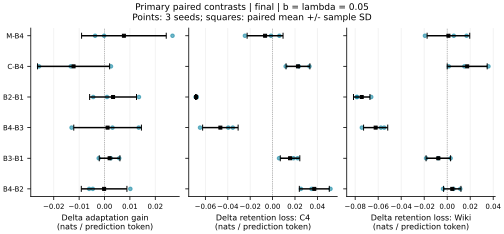
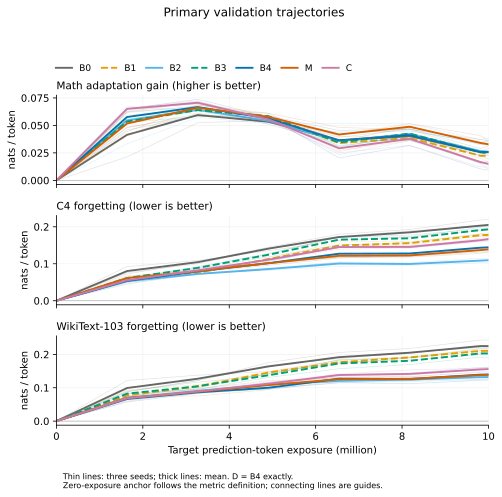
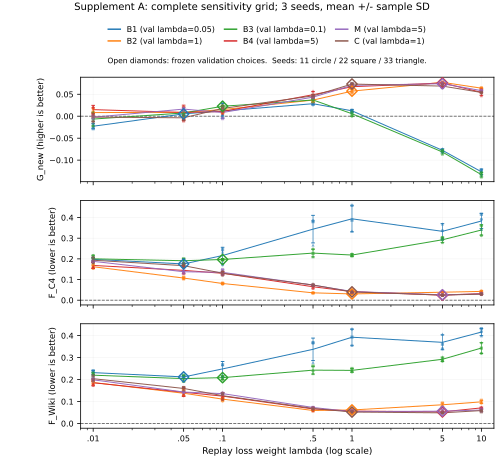
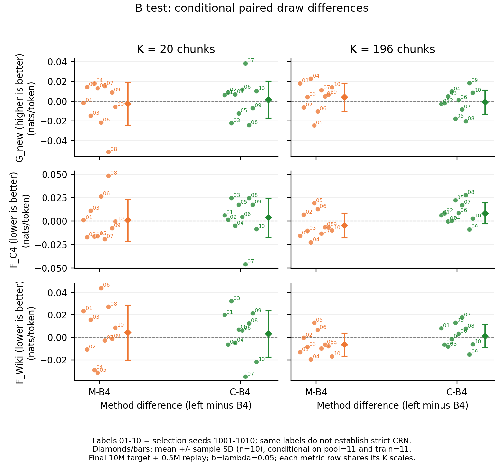

研究工作稿，实验进行中。最终摘要与结论将在预定测试完成后填写。
研究时段为 2026 年 11 月 6 日 03:26:32 至 11 月 7 日 03:26:32 UTC。工作以原始开题报告为依据，在 4 张 NVIDIA H100 80GB 上开展。本文区分原计划主实验、预先声明的补充实验，以及用于发现工程问题的诊断运行。配置或代码已完成，不等于对应实验已完成。
研究对象是在英文数学文本上继续进行下一词预测训练的语言模型。目标是测量适应增益与通用文本性能变化，并检验在有限回放库、固定累计回放量下，来源、训练目标和样本选择各起什么作用。数学文本损失下降不是数学推理能力的直接证据；通用语料的损失变化也不能代表全部预训练知识。
本文不把自生成回放、教师蒸馏或聚类选择作为新算法发明。预期贡献是可复核的因素比较：分开控制回放库容量、累计暴露和损失权重，报告选择是否有效、何时无效，以及数据生成和教师推断的成本。相关文献的证据、发表状态与适用边界见文献调研和参考文献数据库。
已有研究表明，通用数据回放可能减轻遗忘，也可能改善目标域学习；小比例注入在特定设置中有效，并不意味着存在跨模型通用的最优比例。固定有限库被重复利用时，还需要区分新样本覆盖和重复训练。自生成回放为无法取得原始预训练数据时提供了可检验的替代方案，但其覆盖范围和优化行为仍需独立评价。Béthune 等，ICML 2025、Marek 等，2026、Kotha 与 Liang，2026。
选择策略的依据需要与评价指标相区分。NLL 分层约束有限库中的惊讶程度分布，聚类约束教师表示空间中的代表性；二者都不能直接推出保留效果。SSR 已包含聚类选择等步骤，因此本文的聚类组是受既有工作启发的控制，并非完整 SSR 复现。Huang 等，ACL 2024。
据此，研究问题分为三类：相同回放预算下的来源与目标比较；同一生成池上的选库比较；收益对暴露、库容量和准备成本的敏感性。主实验回答第一层控制问题，补充实验检验结论对参数和数据规模的依赖。
主模型为最终预训练检查点 Pythia-410M，完整更新所有学生参数，初始模型同时作为固定教师。目标语料为 FineMath 的 finemath-4plus，替代通用回放为 C4 English；分别在数学文本、独立 C4 和 WikiText-103 上评价。C4 不是 Pythia 实际使用的 Pile 预训练语料，因此这里只称替代通用回放。
| 组别 | 回放来源与选择 | 回放目标 |
|---|---|---|
| B0 | 无回放 | 仅目标域 CE |
| B1 | C4 随机库 | CE |
| B2 | 与 B1 相同的 C4 库 | 冻结教师到学生的 forward KL |
| B3 | 自生成随机库 | CE |
| B4 | 与 B3 相同的生成库 | forward KL |
| D | 生成池精确去重后随机选择 | forward KL |
| M | 去重后按教师 NLL 五等频层比例抽样 | forward KL |
| C | 去重后按冻结教师表示聚类选代表 | forward KL |
主训练集包含 2,093,056 个不同预测位置，固定累计处理 10,000,000 个目标预测 token。每个生成池为 1,000,027 个预测 token，每个主回放库为 100,156 个预测 token。512 个输入 token 的完整块对应 511 个因果预测位置，边界余量通过 mask 精确计数。八组各使用三个种子；B4/M 另加两个暴露比例，共 36 个主配置。
累计回放比定义为 b = replay_prediction_tokens / target_prediction_tokens，主值为 0.05，敏感性值为 0.01 和 0.10。目标与回放损失分别按各自有效预测位置取均值，再以独立权重 λ 相加；因此固定 λ 改变 b 并不等于让回放平均损失权重按 b 成比例变化。完整公式、生成 CE 与 KL 的关系、分层方差的适用假设见方法推导与解释边界。
学习率由独立校准种子 101 的目标验证损失选择，候选为 10⁻⁵、3×10⁻⁵、10⁻⁴；最终采用 3×10⁻⁵。共享 λ 校准使用种子101和2M目标预测token，候选为0.05、0.5、1、5，按B1—B4的平均验证得分选择：目标 NLL 变化加两个旧域 NLL 变化的平均值，得分越低越好，最终采用 0.05。这里的等权得分是一项明确的决策规则，不是所有应用共同接受的效用函数。各方法共享这一选择，保证校准规则一致，但不保证各自达到最优；补充 A 再提供较完整的权重曲线。
每步有效目标批量为 64 个完整块，采用 microbatch 16、梯度累积 4；末步按剩余有效预测位置计数。优化器为 fused AdamW，β=(0.9,0.95)、ε=10⁻⁸、weight decay=0.1、梯度范数裁剪阈值 1。学习率采用 3% warmup 和余弦衰减，最低为峰值的 10%。学生与教师权重保留 FP32，CUDA 前向采用 BF16 autocast，CE/KL 概率运算使用 FP32。KL 覆盖完整词表，不只比较生成 token 的概率。
同一 seed 下，各组共享目标文本顺序与学习率日程；回放具有独立的数据流和计数。三个正式 seed 分别对应一整套生成池、选库和训练数据顺序，因此跨 seed 波动包含这些来源，不能只归因为优化器随机性。补充 B 另固定生成池和训练流，以分离选库条件波动。306 步完成 10M 目标预测 token，主回放比例对应累计 500,000 个预测 token，约为 100,156-token 回放库容量的五倍。这是反复读取有限库，不能称为新增了 500,000 个不同 token。优化、验证和数据生成均有单独日志，等 token 暴露也不等于等墙钟时间或等 FLOPs。
生成从单个 BOS token 开始，温度为 1，top-p=1、top-k=0；每块继续采样 511 个 token，遇到 EOS 仍继续，得到固定长度的 512-token 块。各正式 seed 有独立生成池，同一 seed 的 B3/B4/D/M/C 共用该池。未施加质量过滤或人工挑选；这种无条件生成方式便于控制预算，也限制了语义和任务覆盖。
M 根据教师平均 NLL 排序分为五个等频层，按最大余数法分配抽样整数配额。它控制的是所选库的 NLL 组成，不直接优先容易文本。C 对教师最后层预测上下文的平均表示作 L2 归一化，使用 MiniBatchKMeans 并选最近代表。选择统计与评估任务不同，特征覆盖改善不能当作旧知识保留的证据。实际生成池没有整块精确重复，因此 D 与 B4 的库完全相同；本次 D 是数值空对照，不能估计在有重复语料中的去重收益。
对固定上下文，若硬标签确由同一教师完整分布采样，生成 CE 的期望等于 forward KL 加上与学生参数无关的教师熵。这不意味着当前有限库中两种训练相同：初始学生等于教师时，KL 梯度为零，而固定生成标签的 CE 梯度通常不为零；重复回放不会自动消除那次标签抽样的误差。真实 C4 的条件分布也不等于教师分布，B2−B1 不能只解释为标签采样降噪。
FineMath 先按规范化文档哈希划分，再逐文档分块；C4 回放与评价分开，WikiText 按文章重建。精确重复及固定阈值的 token ngram 检查均有机器记录。数据抽样限于若干固定 shard 的顺序前部，并排除不能形成完整块的短文本，因此结论条件于这些采样与长度规则。
初期数据审查发现旧数学验证集受一篇长文档支配。正式评价前据此建立独立路径 evaluation_v3：FineMath/C4 各验证与测试集合扩为 1024 块，每篇最多四块，长文档按固定文档哈希均匀取块。该修改由数据集中度触发，没有使用测试损失；旧版校准结果保留为历史记录。
| 主实验数据角色 | 块数 | 有效预测 token 数 | 约束 |
|---|---|---|---|
| FineMath 训练 | 4,096 | 2,093,056 | 文档划分后分块 |
| C4 候选回放 | 2,048 | 1,046,528 | 与独立 C4 评价分开 |
| FineMath 验证 / 测试 | 各 1,024 | 各 523,264 | 每篇最多四块 |
| C4 验证 / 测试 | 各 1,024 | 各 523,264 | 每篇最多四块 |
| WikiText-103 验证 | 461 | 235,571 | 官方分区，按文章重建 |
| WikiText-103 测试 | 529 | 270,319 | 官方分区，按文章重建 |
主 FineMath 验证/测试分别包含 507/466 篇文档，C4 为 625/595 篇。块级平均仍使较长文档有较大权重，因此最终测试同时补报等文档加权结果和成对文档 bootstrap。去污染在完整文档层面执行，再施加每篇块数上限；精确重复和 13-gram 覆盖率检查不能保证语义独立，也不能排除这些公开文本曾出现在模型预训练中。
相同生成库的 B4/D 空对照进一步发现，默认 CUDA 注意力反向传播的非确定性足以影响训练比较。原批次已隔离，不进入正式方法结论。严格确定性设置通过跨 GPU 梯度和权重重复检查后，全部学习率和 λ 校准重新执行。完整 306 步 B4/D 资格检查中，各步损失、梯度范数、七次验证以及最终权重均一致。正式代码版本为 de54262b8deff2c49547bba740d0dbf28a1074a7，十个核心源码与训练前快照相符。 严格确定性约束当前操作路径的重复性，不等于全部运算使用FP32；前向仍采用BF16，记录中的matmul与cuDNN TF32许可均为开启，训练和评价使用匹配设置。
这次修复不意味着任意硬件和软件版本之间都能逐位复现。最终 36 组训练全部完成，完整审计没有发现违反冻结协议的情况；三个 seed 的 B4/D 逐步训练、验证值及完整模型参数指纹均相同。这证明当前平台及冻结实现下的相同输入控制通过了实际检查。记录另见确定性证据、最初资格检查和独立实现审查。
主实验训练、验证和独立 NLL 测试已完成；补充训练与行为评价继续按冻结方案进行。
固定目标暴露的最终检查点为主要端点；按目标验证损失选择的最佳检查点另报，并保留其实际训练量。C4 与 WikiText 的变化分别报告。三个训练种子的个体结果、均值与样本标准差同时给出；成对文档 bootstrap 只描述给定检查点下的文档抽样不确定性，不代替训练种子的变化。 区间依赖评价文档独立或可交换的重采样近似；同源或主题相关性可能限制其总体覆盖解释。
选库机制的前置诊断见回放库分布诊断。成本测量区分方法独立使用时所需统计与本研究共享准备产物的实际消耗。训练、验证、检查点写入和准备过程分别计时，教师前向等嵌套计时不重复相加。
67 项物理 NLL 推理全部完成，冻结来源与执行完整性核对通过后，于 2026-11-06 07:14:59 UTC 首次读取测试分数。它们包含初始模型及 66 个不同适应后端点；六个 D/B4 逻辑端点凭完整模型状态相等证明复用推理，共覆盖 36 个配置的 final/best 两种端点。全部训练方法、网格、长程时长及验证选择规则已在此次读取之前冻结，没有据测试调参。主NLL首次读取时，行为与补充测试仍封存；此后分别授权了第6.1节的A-NLL和第6.2节的B-NLL，C及行为继续封存。
初始测试 NLL 为数学 2.418839、C4 3.098363、WikiText 3.099172。以下是主比例八组的 token 加权结果，均值±三个 pipeline seed 的样本标准差，单位 nats/预测 token。G 越大越好，F 越小越好；正 F 仍表示损失增长，KL 缓解遗忘不等于消除遗忘。
| 组别 | 数学增益 G | C4 遗忘 F | WikiText 遗忘 F |
|---|---|---|---|
| B0 | 0.0077 ± 0.0108 | 0.2032 ± 0.0137 | 0.2272 ± 0.0163 |
| B1 | 0.0054 ± 0.0047 | 0.1755 ± 0.0049 | 0.2119 ± 0.0046 |
| B2 | 0.0088 ± 0.0129 | 0.1072 ± 0.0047 | 0.1375 ± 0.0117 |
| B3 | 0.0074 ± 0.0057 | 0.1911 ± 0.0118 | 0.2041 ± 0.0143 |
| B4 | 0.0086 ± 0.0166 | 0.1444 ± 0.0174 | 0.1420 ± 0.0185 |
| D | 0.0086 ± 0.0166 | 0.1444 ± 0.0174 | 0.1420 ± 0.0185 |
| M | 0.0163 ± 0.0032 | 0.1378 ± 0.0073 | 0.1430 ± 0.0001 |
| C | -0.0036 ± 0.0061 | 0.1671 ± 0.0077 | 0.1593 ± 0.0062 |
同来源 KL−CE 在两个旧域、三个 seed 上均降低了损失增长。生成 KL 相比 C4 KL 的目标增益平均相近，但 C4 遗忘更高；WikiText 差异较小。两种生成/真实来源在 CE 下的排序也随旧域而异，因此不支持生成回放对所有评价分布的统一优势。下表完整保留六项预定配对，先在同 seed 内相减，再计算均值和样本 SD；ΔG 为正支持前者，ΔF 为负支持前者。
| 成对比较（前者减后者） | ΔG | ΔF C4 | ΔF WikiText |
|---|---|---|---|
| M-B4 | 0.0076 ± 0.0167 | -0.0067 ± 0.0160 | 0.0011 ± 0.0185 |
| C-B4 | -0.0122 ± 0.0142 | 0.0227 ± 0.0106 | 0.0174 ± 0.0174 |
| B2-B1 | 0.0034 ± 0.0092 | -0.0683 ± 0.0005 | -0.0743 ± 0.0072 |
| B4-B3 | 0.0012 ± 0.0133 | -0.0466 ± 0.0158 | -0.0622 ± 0.0105 |
| B3-B1 | 0.0020 ± 0.0041 | 0.0156 ± 0.0087 | -0.0077 ± 0.0106 |
| B4-B2 | -0.0002 ± 0.0090 | 0.0373 ± 0.0134 | 0.0044 ± 0.0075 |

M 的数学增益与 C4 保留平均略好于 B4，但差异小于相应 seed 间成对标准差；WikiText 平均反而略差。三个 seed 不足以支持“分层稳定胜出”。C 在固定 10M 最终端点的三个主要均值上都劣于 B4；这限定于当前特征、聚类实现、预算和端点，不能推广成聚类选择普遍无效。
最终数学增益比验证阶段所见更弱。C 的 token 加权均值为 −0.0036，但每个 seed 的条件 95% 文档 bootstrap 区间均跨零，不宜将这份接近零的估计写成稳定的负适应收益。按文档等权，C 的平均增益为 +0.0183，B4 为 +0.0299，M 为 +0.0371；两个口径权重不同，对近零绝对增益可能给出不同符号，必须并列保留。它们都只测数学文本下一词拟合，不能作为推理能力的结论。
按文档重采样时，FineMath、C4、WikiText 的样本数分别为 466、595、60，使用 5000 次成对抽样。区间条件于已经训练的模型及当前文档样本，不包含重新训练、选库、调参或换数据分区的不确定性，不能把抽样次数当作实验重复数。全部逐 seed、等文档指标、配对区间和来源 SHA 见独立测试讨论及主测试 final 分析。
B4 在 b=.01/.05/.10 的 C4 遗忘均值依次为 .1383/.1444/.1504，WikiText 为 .1365/.1420/.1514；M 的 C4 约为 .1378/.1378/.1399。增加累计回放量没有呈现简单的单调保留收益。该比较固定 λ=.05，改变 b 同时改变每步样本数、有限库重复次数和单 token 相对系数，不能解释为单独增加平均 KL 权重；全部预算条件仍包含在主分析中。
完整验证轨迹显示，主36的最佳目标验证点全部早于最终10M：1个在1.6352M、33个在3.2704M、2个在4.9056M。目标训练集只有约2.093M不同目标预测位置，重复训练后出现目标验证退化。最佳点完全由验证选择，随后才独立测试；固定10M主比较依然保留。

以下表格是这些验证选点的独立测试结果，而不是用于选点的验证分数。单位、方向和seed SD同上；不同方法的实际选点曝光可能不同，因此不是相同训练量的另一张主排名表。
| 组别 | 数学增益 G | C4 遗忘 F | WikiText 遗忘 F |
|---|---|---|---|
| B0 | 0.0468 ± 0.0067 | 0.1115 ± 0.0193 | 0.1322 ± 0.0160 |
| B1 | 0.0526 ± 0.0035 | 0.0736 ± 0.0020 | 0.1058 ± 0.0036 |
| B2 | 0.0528 ± 0.0053 | 0.0623 ± 0.0154 | 0.0868 ± 0.0203 |
| B3 | 0.0514 ± 0.0048 | 0.0874 ± 0.0035 | 0.1057 ± 0.0102 |
| B4 | 0.0544 ± 0.0049 | 0.0781 ± 0.0016 | 0.0879 ± 0.0027 |
| D | 0.0544 ± 0.0049 | 0.0781 ± 0.0016 | 0.0879 ± 0.0027 |
| M | 0.0530 ± 0.0058 | 0.0784 ± 0.0023 | 0.0902 ± 0.0128 |
| C | 0.0574 ± 0.0011 | 0.0806 ± 0.0057 | 0.0903 ± 0.0025 |
36个配置中，验证选出的较早点在独立测试的数学损失和两个旧域损失上均低于各自最终点。这是同一次训练中两个预定端点的描述性比较，支持当前小目标库下继续训练至10M出现收益退化的判断；它不增加独立训练次数，也不表示已检验所有停止策略。实际训练仍执行到10M，所以成本按完整路径记账，不能按较早点抹去已发生的后续计算。
选择策略的表现在两类端点间也不同：C 在最佳点的数学增益均值高于 B4，旧域损失增长仍略高；M 在最佳点的三个均值上没有显示相对 B4 的优势。在本次均位于3.2704M的B3/B4最佳点，生成KL−CE的数学增益平均差为+0.0030，C4/WikiText遗忘差为−0.0093/−0.0178，小于最终10M处的旧域差异。保留效应的大小也依赖所比较的训练端点。不能只用最终端点的排序概括整条训练轨迹，也不能根据测试临时决定只展示某个端点。逐配置曝光与全部数值见best测试分析，完整验证表另见验证结果讨论。
相近目标验证损失的插值仅作粗粒度诊断，大部分穿越位于初始到首个验证点之间；没有对应真实中间检查点，不据此宣称同等适应程度下的精确优势。两个预先登记加权指标的差别另作测试后描述性分解：它解释固定样本中的加权关系，不作长度因果结论，也不参与选模。
主验证结果出现 CE/KL 差异后，另登记一项诊断，比较 B3/B4 在实际随机回放库及同池补集上的变化。每个 seed 的库含 196 块，补集含其余 1761 块；两者互斥并完整覆盖原生成池。补集未进入该随机库，但来自参与过统计与选择的同一池，因此不能充当新的独立测试集。这项诊断不用于调参或改变主比较。
以各分区自己的初始 NLL 为基线，定义 ΔNLL 为适应后减初始损失，gap 为补集 ΔNLL 减库内 ΔNLL。以下为固定 10M 最终端点的三 seed 均值±样本标准差，单位 nats/预测 token。
| 方法 | 库内 ΔNLL | 补集 ΔNLL | gap |
|---|---|---|---|
| B3 生成 CE | −0.7378 ± 0.0575 | +0.2893 ± 0.0128 | 1.0271 ± 0.0698 |
| B4 生成 KL | +0.1242 ± 0.0013 | +0.1704 ± 0.0022 | 0.0462 ± 0.0020 |
B3−B4 的成对 gap 差为 +0.9809±0.0678，三个 seed 同向。B3 在库内已见标签上的 NLL 大幅下降，但其库内教师 KL 为 0.3872，高于补集的 0.2896；B4 对应为 0.1283 和 0.1709。标签拟合与教师完整条件分布的匹配在这里给出了不同信息。该模式与有限标签被反复拟合的解释一致，不能单独证明全部旧域退化的原因。
对固定学生参数和前缀，新抽教师标签的期望 CE 等于教师熵加 forward KL；训练后的参数已经依赖同一 bank，库内经验 CE 不再能直接代替这一期望。B4 也使用过库内上下文，其库内指标同样不是独立评价。按目标验证选择的最佳点在本诊断中均为 3.2704M，其成对 gap 差为 +0.4366±0.0239。仅有最佳与最终两个端点，不能推出训练全程的单调变化。
该诊断新增 15 次推理、没有新增训练，推理子进程合计 319.5 秒，输入验证 49.5 秒；教师前向已包含在推理时间内。逐 seed 数值、KL、端点曝光与全部成本见完整诊断。
下表取主比例八组、每组三 seed 的实际记录。训练一列为均值±样本 SD，其余为均值，单位秒；父项合计包含模型设置、训练、验证和检查点写入。它是各进程已记账分项的总和，不是四卡并行后的总历时，也不是纯 GPU kernel 时间。
| 组别 | 训练秒数 | 验证秒数 | 父项合计秒数 |
|---|---|---|---|
| B0 | 170.9 ± 0.7 | 132.7 | 316.2 |
| B1 | 189.7 ± 0.6 | 132.5 | 334.2 |
| B2 | 198.2 ± 3.4 | 132.8 | 343.0 |
| B3 | 193.3 ± 0.9 | 133.2 | 339.3 |
| B4 | 198.8 ± 2.9 | 133.1 | 344.5 |
| D | 201.2 ± 1.5 | 132.4 | 345.8 |
| M | 198.2 ± 2.3 | 133.1 | 343.6 |
| C | 200.6 ± 1.2 | 133.0 | 346.1 |
KL 组的训练教师前向约为6.1秒，已包含在训练父项中，不能再加一次。D/B4 虽然模型状态相同，本研究确实各自执行了训练，其训练成本均保留；只在之后的评价与权重保存中复用了已经证明相同的模型。各组整次运行的 allocated 峰值约为17.29 GiB，包含共同的教师 KL 验证和教师常驻，不能据此说训练目标本身具有相同内存需求。
固定预测预算还需与实际输入量区分。所有主运行均处理10M目标预测位置，对应10,019,570个有效输入位置及10,019,840个含padding输入位置；不同回放预算的实际计数如下，相同b在各方法和seed间完全一致。
| b | 回放预测暴露 | 有效输入位置 | 含padding输入位置 | 唯一监督覆盖 | 重复监督暴露 |
|---|---|---|---|---|---|
| 0.01 | 100,000 | 175,257 | 238,899 | 100,000 | 0 |
| 0.05 | 500,000 | 563,443 | 626,176 | 100,156 | 399,844 |
| 0.10 | 1,000,000 | 1,064,421 | 1,126,912 | 100,156 | 899,844 |
库容量均为100,156，b=.01实际尚未监督完整个库。分块读取跨步保留进度，同时重读完整因果前缀；旧位置只提供上下文，不重复计入当轮监督预算。这里的输入计数只计学生训练流，不再加上教师前向，也不包含验证，因此不能当作所有模型调用总量或FLOPs。三个非零b在当前批量下都需要每步一次回放前向；B4训练时间的三seed观察范围分别为193.3–198.0、195.9–201.7、202.2–203.7秒，预测量的十倍变化并未对应训练墙钟的十倍变化。这些是当前实现与并发环境的观察，不能作独立的运行时间因果估计。逐项预算审计提供完整计数、λ/b和独立重算证据。
三个正式生成池分别耗时119.0、117.1、117.5秒，联合教师统计约8.1秒/池；每池 NLL 分层选择约0.067秒、聚类选择约2.35–2.66秒。准备父项合计386.3秒，在本次共享池研究中只计一次，不能按使用该池的方法或预算条件重复计费。这里没有把混合 pilot/正式准备的未分摊开销全部强算给主实验。
独立部署成本与共享研究成本不同。单独运行 M 需要 NLL 统计，C 可只提取不经 LM head 的教师特征；独立计时诊断中两条路径分别约8.66秒和3.32秒/池，不能凭“聚类”名称断言 C 的准备总成本必然更高。这些新测统计计时与历史 CPU 选择计时来自不同测量，不能相加后冒称已测端到端系统时间。本文为控制比较让随机组也使用完整1M候选池；其他实现可以直接为随机回放生成较小库，本文没有实测该替代路径，因此当前成本不是生产部署的最低成本。
主67项独立 NLL 推理子进程累计1782.7秒，冻结输入验证285.1秒；初始模型计一次，六个相等端点没有重复前向。探索性 replay-fit 另有15项推理；两种端点的训练费仍按同一次完整训练计一次。原始分项见主训练成本、共享准备成本和主测试成本。全部校准、失败诊断、扩展训练、资源利用及后处理的总账将在研究截止前汇总；此表不冒充整个24小时的费用。
补充实验预案包含损失权重曲线、固定训练流与生成池的选库条件波动、较大目标库与较大模型，以及固定的零样本选择题评价。补充 B 的抽样种子不是独立训练种子。扩展训练与主数据有包含和重合关系，需要使用配套去污染评价集合，也不能称为第二次独立总体复制。
补充A的六种回放方法、七个λ（.01、.05、.1、.5、1、5、10）和三个seed已全部完成，共126个逻辑条件；其中18个λ=.05条件沿用主实验，不算新的训练重复。固定最终10M目标暴露、b=.05、学习率和库，不在测试集上选择检查点或λ。完整验证网格完成后，于2026-11-06 09:16 UTC冻结每种方法的共同λ，得分为三seed平均的S=−G+.5(F_C4+F_Wiki)。09:47 UTC在全部推理与来源核验通过后才允许读取这批独立NLL结果；其中主实验18个沿用条件已在此前主分析中读取，这一点保留在首次读取记录中。
下表给出验证选择后的独立测试均值±三seed样本标准差。所有方法使用相同候选网格和选择规则，但最终λ可以不同，因此它比较的是“方法加验证选参”的完整政策。
| 方法 | 验证所选λ | 数学增益G↑ | C4遗忘F↓ | WikiText遗忘F↓ |
|---|---|---|---|---|
| B1：C4 CE | .05 | .0054±.0047 | .1755±.0049 | .2119±.0046 |
| B2：C4 KL | 1 | .0572±.0040 | .0304±.0013 | .0614±.0074 |
| B3：生成CE | .1 | .0227±.0020 | .1970±.0047 | .2086±.0087 |
| B4：生成随机KL | 5 | .0757±.0010 | .0244±.0008 | .0527±.0014 |
| M：生成分层KL | 5 | .0741±.0030 | .0260±.0023 | .0561±.0092 |
| C：生成聚类KL | 1 | .0733±.0018 | .0402±.0018 | .0520±.0031 |

图：六种方法的全部七个λ及三个seed；实线为均值、误差线为样本标准差，淡色点形区分seed，空心菱形标记在验证集上冻结的选择。横轴为对数尺度，连线仅作视觉引导；G越大越好，两个F越小越好，零虚线对应初始模型。完整测试曲线只描述敏感性，不用于重新选择λ。
权重是影响结论的重要条件。B4从λ=.05到验证选择的5，数学增益均值由.0086增至.0757，C4遗忘由.1444降至.0244，WikiText遗忘由.1420降至.0527；适应与保留在这组端点上同时改善。它不支持“更强保留必然损害适应”的预设，也不意味着任意增大λ都有利：完整网格中B4到λ=10时，数学增益降至.0544，两项遗忘均回升。CE两组的大λ还伴随数学增益转负和旧域退化增大，不能将增加平均回放权重等同于保留保证。
来源比较必须注明λ。主实验固定λ=.05时，B4相对B2的C4遗忘均值更高；各自验证选参后，B4(5)−B2(1)的成对数学增益为+.0185±.0043、C4遗忘差为−.0061±.0012、WikiText遗忘差为−.0087±.0060。这是两种已选政策的比较，不能替代相同λ下的来源因素效应。M与B4都选5，但三项成对均值分别为−.0017±.0035、+.0017±.0022、+.0033±.0097，仍不支持稳定的分层优势。C的所选λ也不同，须按政策比较解释。其相对B4的数学增益差还依赖预先约定的加权口径：token加权为−.0024±.0027，等文档为+.0033±.0025，三个seed均改变方向。两者对应不同的平均问题，不能给出跨口径统一的C/B4排名，也不据此重新选择λ。
主实验的共享λ来自较短2M校准、独立种子101及B1—B4共同得分；A使用10M、三个seed、扩展候选网格和逐方法选择。所选λ的差异不能仅归因于训练长度。三个seed的标准差条件于同一个已经选定的λ，不包含重新采样验证集并重复整套调参的波动；逐文档区间同样条件于已训练的模型。 所选B4的数学增益在token加权与等文档加权下分别为.0757±.0010和.0846±.0012。M−B4的数学增益差在seed11为+.0011，条件文档区间[+.0001,+.0020]；seed33为−.0056，区间[−.0065,−.0046]。固定模型上的窄区间并没有消除训练seed之间的方向差异。完整126条件、全部七点曲线、同λ配对及已选政策配对一并交付，不按测试结果只保留有利点。验证选择核对、独立测试输出、完整配对与条件区间。
补充B的60次训练和预先冻结的留出集NLL测试已全部完成，沿用主实验的评价集合与初始基线。实验固定生成池seed11、训练顺序seed11，比较B4、M、C三种选库规则，20与196块两种库容量，以及1001—1010十个选库seed。各条件均处理10M目标和.5M回放预测token，λ=.05；A的结果未用于追改这些条件。两种库容量分别为10,220和100,156个预测token，累计回放约为其48.92倍和4.99倍。这里的十次重复描述固定池和训练流下的选库波动，不是十个独立训练seed或生成池，也不能与主实验合并为十三个seed。
下表为独立测试的token加权均值±十次选库的样本SD。全部60个个体及同标签配对结果均保留。
| 库块数 | 选库 | 数学增益G↑ | C4遗忘F↓ | WikiText遗忘F↓ |
|---|---|---|---|---|
| 20 | 随机B4 | −.0002±.0120 | .1683±.0108 | .1712±.0114 |
| 20 | 分层M | −.0027±.0126 | .1695±.0136 | .1756±.0179 |
| 20 | 聚类C | .0014±.0142 | .1721±.0173 | .1744±.0166 |
| 196 | 随机B4 | .0042±.0095 | .1494±.0101 | .1493±.0081 |
| 196 | 分层M | .0082±.0108 | .1450±.0103 | .1430±.0085 |
| 196 | 聚类C | .0033±.0111 | .1580±.0106 | .1506±.0104 |
在196块库下，M−B4的数学增益、C4与WikiText遗忘差分别为+.004052±.014265、−.004415±.013233、−.006274±.010198；有利方向个体数分别为7/10、7/10、8/10。20块库的三个均值方向则均不利。C在两种容量下均未同时改善目标增益与两域保留。相同数字的选库seed不保证不同算法消耗相同随机数，因此这些差只称同标签配对，不宣称严格共同随机数设计带来的方差缩减。

图中01—10对应选库seed1001—1010；每个点是一个完整训练终点的同标签差，菱形与误差棒为均值±样本SD。每行两个库容量共享纵轴范围。G差向上、F差向下表示有利；误差棒不是文档bootstrap置信区间。
M的库均值教师NLL在两种容量下更稳定，但其测试端点SD在两种容量×三个token指标的六格中均未低于B4。较大库下均值改善，并未同时表现为较小的选库波动。这只是本次十个draw的样本观察，不证明总体方差严格更大，也没有直接测量所有梯度方向。它支持将“库组成更稳定”和“优化后保留更稳定”分开检验，不能以组成诊断替代训练结果。
两种文档加权口径的六条件均值排名相同，目标增益数值却明显不同：等文档G均值约.0192—.0290，token加权约−.0027—.0082。冻结目标测试中保留更多块的文档获得更高token权重，这是可核对的权重分解，不能解释为原始文档长度的因果效应。条件文档区间也不能替代选库波动：196块库的M−B4在draw1001的token ΔG为+.018049，95%条件区间[+.016057,+.019954]；draw1005为−.024406，区间[−.026229,−.022537]。固定模型上的窄区间仍可对应不同选库下相反的方向。完整等文档结果、全部条件区间和成本见补充B完整测试解释。
长程部分固定 Pythia-410M 与 1B 各八组×三个 seed，分别处理 100M 目标预测 token；2.8B 为五组×三个 seed、25M token。各模型使用约 20M 不同目标预测位置及配套评价集合。2.8B 原定 50M 因纯运行时间预算在正式长程启动前一次性改为 25M，保留全部十五个条件、重设完整学习率日程，没有依据测试结果删组选种子。不同模型同时改变容量、批量、数据与训练时长，不能将其差异单独归因为参数规模。具体决策与时间余量见预算修订。
共享小规模校准提供统一、可审计的比较条件，不保证每个方法在长训练下达到全局最优。局部表示覆盖、输出 KL、文本 NLL 和选择题正确率描述不同对象。最终结论将依据实际完成的实验范围，明确未验证的模型、分布与能力。
代码位于 src/replay_study/ 和 scripts/，冻结配置、输入版本与哈希位于 configs/ 和 artifacts/。实际运行状态见STATUS。共享存储出现 ENOSPC 后，工作树迁至本机大盘，原路径通过链接保留。主实验全部36个最终端点的权重已无损编码、逐 tensor 还原核对，并写入持久存储：主八组归档约23.24 GiB，十二个预算敏感性条件归档约13.65 GiB，共33份不同权重及D/B4的三个别名。归档包含固定初始模型与恢复代码，不含优化器状态；它支持恢复模型参数，不能直接恢复AdamW训练进度。另36个验证最佳端点也已完成相同的无损还原核验和持久发布，归档35.37 GiB。至此主实验72个逻辑端点均有持久副本，共66份不同模型权重及6个经过证明的D/B4别名。补充实验权重的保存位置将在最终清单中分别说明。格式与校验见无损权重交付说明。
补充A按验证规则选出的18个最终端点也已有持久权重：15份新增权重完成逐张量字节与非优化器元数据的往返校验，另3个B1端点引用已有主归档。新增归档15.79 GiB，完整写入和读回SHA核验通过；这18个端点是所选λ下的训练最终模型，不等于按验证时间点选择的best模型，也不代表保存了A全部126条件的权重。发布记录与明确覆盖范围随项目提供。
本文与配套代码由 AI 协助研究和实现，保留来源、实验日志和失败记录，供作者复核、修改并按学校要求披露。当前文档为研究交付工作稿，不能把占位内容视为已经得到的实验发现。
下列条目供独立阅读报告时定位核心来源；完整 28 条记录及文献之间的比较见配套调研和 literature/references.bib。预印本按核实的版本引用，不擅自补写发表状态。
行为任务、WikiText 资源及实际固定评分实现的条目均包含在完整参考文献数据库中；其评分结果将在对应冻结评价完成后报告。